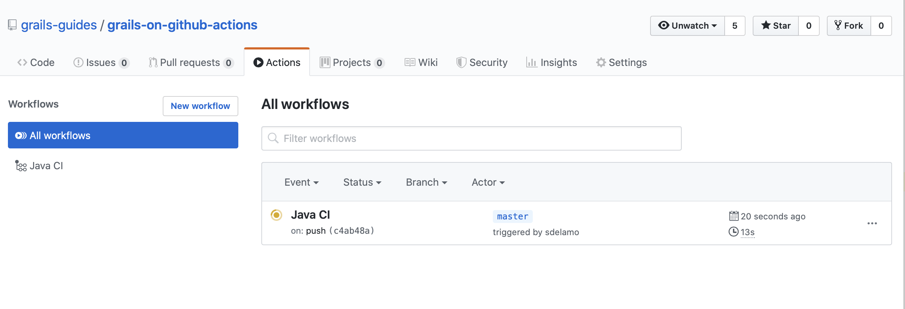
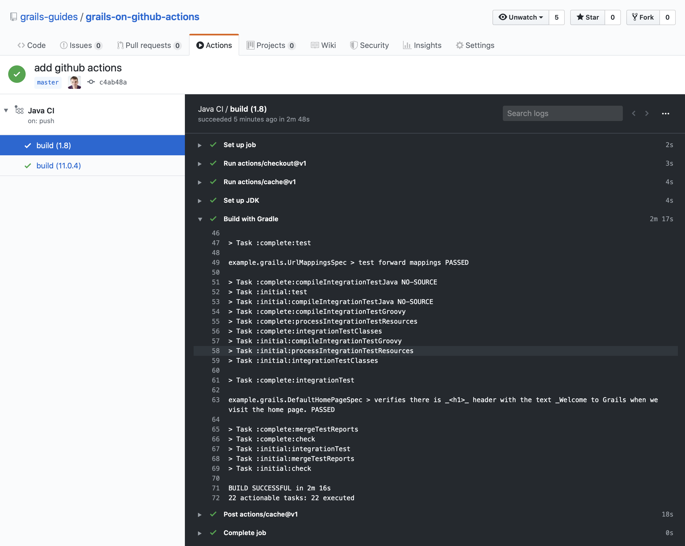

Grails on Github Actions
In this guide, we will learn how to setup Github Actions to build and test a Grails application.
Authors: Sergio del Amo
Grails Version: 4
1 Grails Training
Apache Grails Training
Apache Grails is now part of the Apache Software Foundation. The community-maintained training catalog is being migrated; in the meantime see the Learning page for current resources, recorded talks, and links to other community-supplied training material.
2 Getting Started
Every software project needs Continuous Integration (CI).
Continuous Integration is a software development practice where members of a team integrate their work frequently, usually each person integrates at least daily - leading to multiple integrations per day. Each integration is verified by an automated build (including test) to detect integration errors as quickly as possible. Many teams find that this approach leads to significantly reduced integration problems and allows a team to develop cohesive software more rapidly.
In this guide, we use Github Actions:
GitHub Actions makes it easy to automate all your software workflows, now with world-class CI/CD. Build, test, and deploy your code right from GitHub. Make code reviews, branch management, and issue triaging work the way you want.
You are going to create a Grails application on GitHub and use Github Actions to build and test your code. This guide assumes you are familiar with Git and GitHub. It also assumes that you already have a GitHub account.
2.1 What you will need
To complete this guide, you will need the following:
-
Some time on your hands
-
A decent text editor or IDE
-
JDK 11 or greater installed with
JAVA_HOMEconfigured appropriately
2.2 How to complete the guide
To get started do the following:
-
Download and unzip the source
or
-
Clone the Git repository:
git clone https://github.com/grails-guides/grails-github-actions-cicd.git
The Grails guides repositories contain two folders:
-
initialInitial project. Often a simple Grails app with some additional code to give you a head-start. -
completeA completed example. It is the result of working through the steps presented by the guide and applying those changes to theinitialfolder.
To complete the guide, go to the initial folder
-
cdintograils-guides/grails-github-actions-cicd/initial
and follow the instructions in the next sections.
You can go right to the completed example if you cd into grails-guides/grails-github-actions-cicd/complete
|
3 Writing the Application
The initial project contains a Grails Application created with the web
with the Grails Application Forge.
Your build file build.gradle is setup to run Geb tests seamlessly:
grailsVersion=4.0.1
gormVersion=7.0.2.RELEASE
assetPipelineVersion=3.0.11
webdriverBinariesVersion=1.4
seleniumVersion=3.141.59
chromeDriverVersion=78.0.3904.105
geckodriverVersion=0.26.0buildscript {
...
dependencies {
...
classpath "gradle.plugin.com.github.erdi.webdriver-binaries:webdriver-binaries-gradle-plugin:2.1" (1)
}
}
...
...
...
apply plugin:"com.github.erdi.webdriver-binaries" (1)
...
...
...
dependencies {
...
...
testCompile "org.grails.plugins:geb" (2)
testCompile "org.seleniumhq.selenium:htmlunit-driver:2.35.1"
testRuntime 'net.sourceforge.htmlunit:htmlunit:2.35.0'
testRuntime "org.seleniumhq.selenium:selenium-chrome-driver:$seleniumVersion" (3)
testRuntime "org.seleniumhq.selenium:selenium-firefox-driver:$seleniumVersion" (4)
testCompile "org.seleniumhq.selenium:selenium-remote-driver:$seleniumVersion" (5)
testCompile "org.seleniumhq.selenium:selenium-api:$seleniumVersion" (5)
testCompile "org.seleniumhq.selenium:selenium-support:$seleniumVersion" (5)
}
webdriverBinaries {
chromedriver "${chromeDriverVersion}" (6)
geckodriver "${geckodriverVersion}" (7)
}| 1 | Apply the Webdriver binaries Gradle Plugin. A Gradle plugin that downloads WebDriver binaries specific to the operating system the build runs on. The plugin also as configures various parts of the build to use the downloaded binaries. |
| 2 | Include a testCompile dependency to the Geb Grails plugin which has a transitive dependency to geb-spock. |
| 3 | Adds the necessary selenium dependencies to use Chrome |
| 4 | Adds the necessary selenium dependencies to use Firefox |
| 5 | Geb is built on top of WebDriver. You need these testCompile dependencies. |
| 6 | Configures the ChromeDriver version to be used by the Webdriver binaries Gradle Plugin. |
| 7 | Configures the GeckoDriver version (e.g. Firefox) to be used by the Webdriver binaries Gradle Plugin. |
3.1 Unit Test
The initial application contains a unit test which verifies the default UrlMapping for /.
package example.grails
import grails.testing.web.UrlMappingsUnitTest
import spock.lang.Specification
class UrlMappingsSpec extends Specification implements UrlMappingsUnitTest<UrlMappings> {
void "test forward mappings"() {
expect:
verifyForwardUrlMapping("/", view: 'index')
}
}3.2 Integration Test
The initial application contains a functional test which uses Geb to verify that the Home Page
displays the sentence Welcome to Grails.
package example.grails
import geb.Page
class HomePage extends Page {
static url = "/"
static content = {
titleHeader { $('h1', 0) }
}
String getTitle() {
titleHeader.text()
}
}package example.grails
import geb.spock.GebSpec
import grails.testing.mixin.integration.Integration
@Integration
class DefaultHomePageSpec extends GebSpec {
def 'verifies there is _<h1>_ header with the text _Welcome to Grails when we visit the home page.'() {
when:
HomePage page = to HomePage
then:
page.title == 'Welcome to Grails'
}
}3.3 Verbose Test Output
When running the tests in a continuous integration server is useful to have a more verbose output.
Modify build.gradle:
tasks.withType(Test) {
testLogging {
events "passed", "skipped", "failed"
exceptionFormat 'full'
}
}When we execute the tests we will see output such as:
$ ./gradlew test
....
...
example.grails.UrlMappingsSpec > test forward mappings PASSED3.4 Run Tests
Verify everything executes correctly up to this point.
To run the tests:
./grailsw
grails> test-app
grails> open test-reportor
./gradlew check
open build/reports/tests/index.html4 Create GitHub Repo
We will need to place the Grails application on GitHub so that the CI can access it.
Proceed to GitHub and follow the directions to create a new repository.
| When creating the repo, make it public. Option not to create a LICENSE and .gitignore. We are importing an existing code base so we want to avoid conflicts. |
Import the code into the repo on GitHub by executing the following commands:
> git init
> git add .
> git commit -m "first commit"
> git remote add origin <Your repo URL>
> git push -u origin master5 Integrate Github Actions
To setup Github Actions, create a file:
#.github/workflows/gradle.yml
// missing snippet: ../.github/workflows/gradle.yml| 1 | Run Github action for pushes to branch master. |
| 2 | Run Github action for pull requests targeting branch master. |
| 3 | Run Github action for JDK 8 and 11 |
| 4 | GitHub cache Action allows caching dependencies and build outputs to improve workflow execution time. |
| 5 | Run tests |
When you push the code to Github you will see the Grails tests run with both JDK 8 and JDK 11.


6 Where to Go From Here?
Read about how to automate your workflow with GitHub Actions.
7 Help with Grails
Help with Apache Grails
Apache Grails is supported by an active community of contributors and the Apache Software Foundation. If you need help working through a guide, want to discuss the framework, or have run into something that looks like a bug, the channels below are the right place to start.
-
Slack - real-time conversation with the Apache Grails community.
-
Developer mailing list - design discussions and contributor coordination.
-
Users mailing list - end-user questions and answers.
-
Issue tracker on GitHub - file a bug or feature request against the framework.
For Grails plugins, see the matching project on the apache org or the plugin’s own GitHub repository.